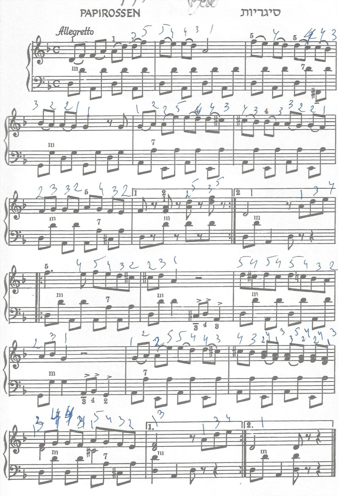

<!-- TMP_Papirossen -->

<!DOCTYPE HTML>

<html>
<head>

<style>
img {
  width: 75%;
}
</style>

<!-- Score/notes for "Papirossen" -->
<script type="text/javascript">
////////////////////////////////////////////////////////////////////////////////


// TODO: pass 'g_tempo', 'g_tactsInLine', 'g_beatsInTact' from the HTML
// TODO: provide a way for user to force alternative 'g_tempo'
var g_tempo = 10*60;  //60; // beats-per-minute
var g_tactsInLine = 7;
var g_beatsInTact = 4;

const g_beatsForFullLine = g_tactsInLine * g_beatsInTact;
const g_fullLineInSec = g_beatsForFullLine * 60 / g_tempo;

/* Images are first resized to equal width, then measured:
 * set IMCONVERT {C:\Program Files\Imagemagick_711_3\convert.exe}
 * #### exec $IMCONVERT --version
 * foreach f [glob {TMP/*.jpg}]  {$IMCONVERT $f -resize 800x -quality 92 [file tail $f]}
 * !Having page-width close to screen resolution makes fading alerts visible!*/  
var g_scoreLines = [
  {tag:"line-001-Begin", pageId:"pg01", x:0, y:51,  timeSec:g_fullLineInSec},
  {tag:"line-002-Begin", pageId:"pg01", x:0, y:228,  timeSec:g_fullLineInSec},
  {tag:"line-003-Begin", pageId:"pg01", x:0, y:412,  timeSec:g_fullLineInSec},
  {tag:"line-004-Begin", pageId:"pg01", x:0, y:599, timeSec:g_fullLineInSec},
  {tag:"line-005-Begin", pageId:"pg01", x:0, y:766, timeSec:g_fullLineInSec},
  {tag:"line-006-Begin", pageId:"pg01", x:0, y:956, timeSec:g_fullLineInSec},
  {tag:"Control-Bottom", pageId:"pg01", x:0, y:1152, timeSec:0},  
  {tag:"Control-Height", pageId:"pg01", x:0, y:1170, timeSec:0},  
];

////////////////////////////////////////////////////////////////////////////////
// Copies one score position record while modifying the duration field
function score_viewpoint(scoreLineObj, timeSec)
{
  let scoreStation = Object.assign(scoreLineObj);  // shallow copy is OK here
  scoreStation.timeSec = timeSec;
  return  scoreStation;
}
////////////////////////////////////////////////////////////////////////////////


// TODO, pass the whole array from the HTML ?table?
// TODO: double-check times
/* The grouped view-points are built assuming 3 lines are visible at each one:
 * - show 01,02,03 while playing 01,02,03,01,02 
 * - show 03,04,05 while playing 03,04
 * - show 04,05,06 while playing 05,06,04,05,06 */
var g_scoreStations_Groupped = [
  {...score_viewpoint(g_scoreLines[0],  (1+1+2/3+1+1) * g_fullLineInSec)},
  {...score_viewpoint(g_scoreLines[2],  (2/3+1) * g_fullLineInSec)},
  {...score_viewpoint(g_scoreLines[3],  (1+2/3+1+1+2/3) * g_fullLineInSec)},
  g_scoreLines.find(x => (x.tag == "Control-Height")),
];

////////////////////////////////////////////////////////////////////////////////
// ... the copy will be 2-level deep - fine for the task
var g_scoreStations = g_scoreStations_Groupped.map(a => {return {...a}});
////////////////////////////////////////////////////////////////////////////////

// Full line play order - with repetitions
/*{pageId:STR, lineIdx:INT, timeSec:FLOAT}*/
var g_linePlayOrder_full = [
  {pageId:"pg01", lineIdx:0, timeSec:g_fullLineInSec},
  {pageId:"pg01", lineIdx:1, timeSec:g_fullLineInSec},
  {pageId:"pg01", lineIdx:2, timeSec:2/3*g_fullLineInSec},
  {pageId:"pg01", lineIdx:0, timeSec:g_fullLineInSec},
  {pageId:"pg01", lineIdx:1, timeSec:g_fullLineInSec},
  {pageId:"pg01", lineIdx:2, timeSec:2/3*g_fullLineInSec},
  {pageId:"pg01", lineIdx:3, timeSec:g_fullLineInSec},
  {pageId:"pg01", lineIdx:4, timeSec:g_fullLineInSec},
  {pageId:"pg01", lineIdx:5, timeSec:2/3*g_fullLineInSec},
  {pageId:"pg01", lineIdx:3, timeSec:g_fullLineInSec},
  {pageId:"pg01", lineIdx:4, timeSec:g_fullLineInSec},
  {pageId:"pg01", lineIdx:5, timeSec:2/3*g_fullLineInSec},
];

// Straight line play order - without repetitions
/*{pageId:STR, lineIdx:INT, timeSec:FLOAT}*/
var g_linePlayOrder_straight = [
  {pageId:"pg01", lineIdx:0, timeSec:g_fullLineInSec},
  {pageId:"pg01", lineIdx:1, timeSec:g_fullLineInSec},
  {pageId:"pg01", lineIdx:2, timeSec:2/3*g_fullLineInSec},
  {pageId:"pg01", lineIdx:3, timeSec:g_fullLineInSec},
  {pageId:"pg01", lineIdx:4, timeSec:g_fullLineInSec},
  {pageId:"pg01", lineIdx:5, timeSec:2/3*g_fullLineInSec},
];

////////////////////////////////////////////////////////////////////////////////
// ... the copy will be 2-level deep - fine for the task
var g_linePlayOrder = g_linePlayOrder_full.map(a => {return {...a}});
////////////////////////////////////////////////////////////////////////////////


//var g_imgPaths = [  "Papirossen.jpg"  ];
  var g_pageImgPathsMap = new Map([
    ["pg01", "Papirossen.jpg"]
  ]);

</script>


<!-- Load the utility code -->
<script src="../Code/ScrollerCommonUtils.js"></script>
<!-- Load the layout code -->
<script src="../Code/PlayOrder.js"></script>
<script src="../Code/ScoreImgLayout.js"></script>
<!-- <\!-- Load the scrolling code -\-> -->
<!-- <script src="../Code/img_scroll.js"></script>  -->


</head>
<body>

<!--  -->

</body>

<!-- Create the play-order layout (AFTER the body)-->
<script type="text/javascript">
////////////////////////////////////////////////////////////////////////////////

// arguments:
//     name,
//     scoreLinesArray, /*{tag:STR, pageId:STR, x:INT, y:INT, timeSec:FLOAT}*/
//     linePlayOrderArray, /*{pageId:STR, lineIdx:INT, timeSec:FLOAT}*/
//     imagePathsArray /*STR*/  //TODO: maybe a Map?
var plo = new PlayOrder("Papirossen",
                        g_scoreLines,
                        g_linePlayOrder,
                        g_pageImgPathsMap,
                        2/*lines in a step*/
                       );

// arguments:
//    pageImagePathsMap,  /*pageId:STR => imgPath:STR*/
//    imgPageOccurences /*pageId:STR, firstLine:INT, lastLine:INT, yTop:INT, yBottom:INT}*/
var iml = new ScoreImgLayout(g_pageImgPathsMap,
                             plo.imgPageOccurences
                            );
iml.render_images();

////////////////////////////////////////////////////////////////////////////////
// prepare global data for the scroller and start it
//var g_imageDimensions = iml.get_image_dimensions_map();

// ... the copy will be 2-level deep - fine for the task
var g_scoreStations = plo.scoreStations.map(a => {return {...a}});

// ... the copy will be 2-level deep - fine for the task
var g_imgPageOccurences = plo.imgPageOccurences.map(a => {return {...a}});
////////////////////////////////////////////////////////////////////////////////
</script>

<!-- Load the scrolling code -->
<script src="../Code/img_scroll.js"></script> 

</html>

